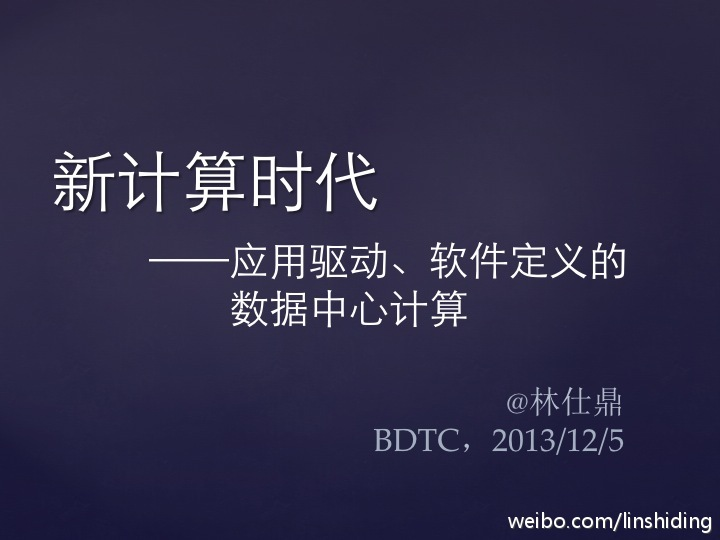
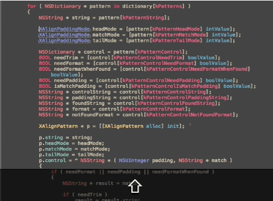

#社区运营#//@V阿旺: 微博的价值受限了，更多的应该考虑把自己的粉丝量化细分，更好的服务受众。我的方式是:微博>QQ群>线上互动互助>线下区域沙龙聚会>异地聚会>提升彼此间更多的合作机会。现在我们俱乐部已经超过200人，在此基础上，已经延伸出比如百店联合营销的二次服务。40家店铺参与@龚文祥:最近一直在思考如何做现有粉丝的运营，新增粉丝的推广完全不用考虑了，运营好现有的20万粉丝已经足够（这也是大多数微博主面对的问题）：1、互动手段：加强现有粉丝间互动：如互粉等活动；2、互助手段：如中介交易服务；3、利益手段：送实在东西给粉丝；多做活动。还有哪些运营现有粉丝的手段？
这个不仅是性别话题，而是对无处不在的歧视现象的讨论。//@爱开源的贡献开源社区:开源社区里只要涉及女性话题，一定带来巨大的波动。从去年Python社区风波再到这次。@Ada李力@LUPA开源社区:【Node.js社区:一个人称代词引发的论战】作为一个开源项目，Node.js以及相关项目都是由社区和志愿者共同维护的，任何的改动都会引发大家的讨论，尤其是现在Node.js在软件 ... 网页链接
我本科毕业的时候，东软所办的软件加强班说只要男生，不要女生；研究生毕业的时候，巨龙公司对学生和学校说，招聘一个女生的话，要搭配一个男生。— 我那个时候觉得是自己不够出色和优秀的缘故，更自责自卑。现在觉得是要大声地对这些丑陋说"NO", 自己不再容忍这种歧视，别人才会改变态度。。
从自己做起，从小事做起。//@James_Xun:行业潜在歧视太多！社会进步还需下功夫！@Ada李力:我本科毕业的时候，东软所办的软件加强班说只要男生，不要女生；研究生毕业的时候，巨龙公司对学生和学校说，招聘一个女生的话，要搭配一个男生。— 我那个时候觉得是自己不够出色和优秀的缘故，更自责自卑。现在觉得是要大声地对这些丑陋说"NO", 自己不再容忍这种歧视，别人才会改变态度。。
大数据技术大会 网页链接@林仕鼎:下午在大数据技术大会上有个talk，我会谈谈对数据中心里软硬件体系结构的一些思考，也就是我一直宣扬的Datacenter Computing的两个特点: application-driven, software-defined。材料在此：网页链接 ，欢迎老师和专家们一起来讨论。 
//@会写代码的文艺女青年:@Ada李力:我本科毕业的时候，东软所办的软件加强班说只要男生，不要女生；研究生毕业的时候，巨龙公司对学生和学校说，招聘一个女生的话，要搭配一个男生。— 我那个时候觉得是自己不够出色和优秀的缘故，更自责自卑。现在觉得是要大声地对这些丑陋说"NO", 自己不再容忍这种歧视，别人才会改变态度。。
//@老郭为人民服务:good @开源中国 @Ada李力 @BeyondVincent @code4app @CSDN_CODE @车库开源技术小组@GeekZooStudio:让开源精神持续发光发热，Geek Zoo rStudio的小伙伴 @QFish为人民服务 的XAlign成为XCODE开发环境的必备代码整理工具，目前排名GITHUB TOP 1，代码下载请前往 网页链接 
回复@老衲焦木: //@老衲焦木:確實，我當年讀高中時女生成績不拔尖，很多男女生把它歸結為生理差距，現在中學普遍陰盛陽衰，又有人重新反說生理差距了。其實男女並無天生智力差距，變的是社會環境 //@Ada李力: //@会写代码的文艺女青年:@Ada李力:我本科毕业的时候，东软所办的软件加强班说只要男生，不要女生；研究生毕业的时候，巨龙公司对学生和学校说，招聘一个女生的话，要搭配一个男生。— 我那个时候觉得是自己不够出色和优秀的缘故，更自责自卑。现在觉得是要大声地对这些丑陋说"NO", 自己不再容忍这种歧视，别人才会改变态度。。
可见目前是谁在把持话语权了，正说反说能占便宜的那种人 //@老衲焦木:確實，我當年讀高中時女生成績不拔尖，很多男女生把它歸結為生理差距，現在中學普遍陰盛陽衰，又有人重新反說生理差距了。其實男女並無天生智力差距，變的是社會環境@Ada李力:我本科毕业的时候，东软所办的软件加强班说只要男生，不要女生；研究生毕业的时候，巨龙公司对学生和学校说，招聘一个女生的话，要搭配一个男生。— 我那个时候觉得是自己不够出色和优秀的缘故，更自责自卑。现在觉得是要大声地对这些丑陋说"NO", 自己不再容忍这种歧视，别人才会改变态度。。
转发微博@火球_Fireball:我在CSDN上发了系列文章“神马是敏捷？” 1）敏捷的“官方”定义 网页链接 2）敏捷流程框架及敏捷实践一览 网页链接 3）敏捷在中国的水土不服 网页链接 4）敏捷不能当饭吃 网页链接 @软件知识原创基地 @Ada李力 @敏捷之旅中国
@ITer谢明志 现在正在这么做。[呵呵]//@刘江总编:应该按精益创业的路子写作出书。到CSDN开博客，开放样章，收集读者反馈吧。@高峡_重庆大数据联盟创始人:一朋友力邀我出本书，这几十年以来，我做过的项目非常多而且杂，看到一些问题，同时我觉得中国需要一本这样的数据库书籍---力求涵盖各个行业的数据库设计模式，包括从需求倒推，范式的灵活使用，反范式的合理运用，并发的验证，结构化和非结构化设计的转换，调优技巧，争取让读者在设计能力有所提高！